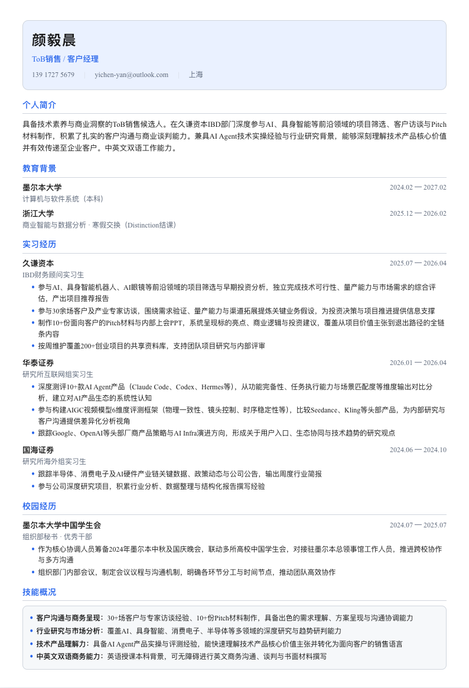
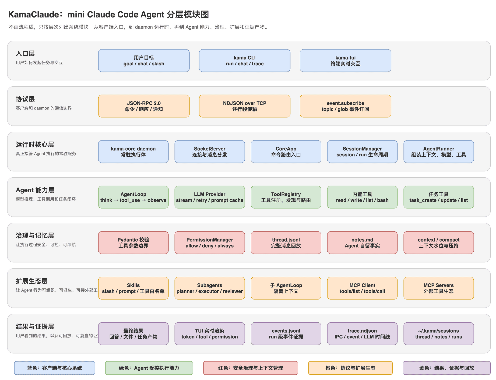
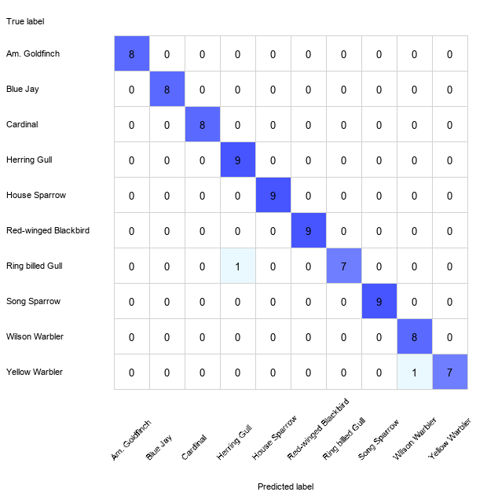

保持好奇心，让 AI 完成你的梦想。
计算机与软件系统本科背景，理解 Agent Loop、工具调用、上下文管理、MCP 等 AI 应用机制，并能使用 Coding Agent 与 AI 工具辅助产品开发和研究提效；同时具备 AI 产品评测、科技项目筛选、产业链研究、访谈及 Pitch/BP 材料经验，能够连接技术理解、商业化判断与沟通协作。
GitHub
@yicLionelLoading contributions…
精选作品
面向一级市场 FA 行业研究的 AI 工作台：独立设计并开发，减少 FA 实习生和初级分析师的重复性整理，同时保留人工对关键数据和结论的审核。
一级市场 FA 行业研究中，资料搜索、数据摘录、口径核对和引用整理耗时重复，且易口径混用、引用不准。
面向 FA 实习生和初级分析师，减少重复性整理工作，同时保留人工对关键数据和结论的审核——不追求全自动，数据可信优先。
把行业研究的重复整理变成可追溯、可审核的证据流——每条 AI 生成结论都能对应原始来源、数据年份、地域和统计口径。
完成产品需求文档、核心工作流、AI 质量规则、评测方案和 15 天实施计划，并建立 GitHub 仓库进行版本管理；MVP 开发与真实用户验证均已落地，经评测集与用户反馈验证了引用准确性、信息完整性和研究效率的提升。
围绕单一 IP 的账号孵化方案：解决单人运营内容号产能难持续、爆款难复现、多平台改写重复劳动的问题，沉淀为可复用的运营 SOP。
单人运营内容号产能难持续、爆款难复现、多平台改写重复劳动——这是个人内容创作的核心痛点。
围绕单一 IP 设计一套从 0 到 1 的账号孵化方案，覆盖用户分层、内容矩阵、AI 生产链路与数据复盘，并沉淀为可复用的运营 SOP。
打造一套可复用的内容生产与增长体系：矩阵结构、Prompt 模板与数据口径可直接复用，单人也能持续产出。
按立项口径测算，3 个月目标产出 120+ 篇内容、有效涨粉 6,000+、私域引流 300+ 人，单篇内容 API 成本控制在 0.1 元以内。交付完整孵化方案与可复用 SOP，矩阵结构、Prompt 模板与数据口径可直接复用；方案处于交付阶段，待真实账号验证执行。
面向应届生与转行者的 AI 求职助手：围绕「输入 JD → 识别匹配差距 → 针对性改写 → 生成可投递简历」链路，把简历定制从耗时重复劳动变成看得见差距的标准流程。
应届生多岗位投递中 JD 差异大、简历定制耗时，且用户 AI 使用能力不一——一刀切的产品无法满足所有人。
通过用户观察与需求分析进行用户分层：为普通用户设计低门槛标准化 Web 流程，为高阶用户提供高自由度 Agent Skill。
「 求职辅助产品的核心，不是替用户把简历写得更漂亮，而是让每个人都能按自己的节奏，把简历改到配得上那个 JD。」
多岗位投递时每个 JD 要求不同，简历定制耗时且容易错过重点。
普通用户不会写 Prompt、容易被复杂 Agent 流程吓退；高阶用户需要自由探索。
反复修改简历、重复设计 Prompt 的隐性成本高，产出不稳定。
用同一套能力服务不同用户：Web 端隐藏复杂度降低门槛，Skill 端保留深度分析满足进阶，均围绕标准求职链路。
邀请约 20 名同学进行灰度测试，累计分析 100 份 JD、生成 200+ 份简历草稿，完成约 60–80 次完整流程；其中 12 人使用 Skill 版本，产生 100+ 次交互。

最终产物是 ATS 友好、可选中文本的 PDF 简历，围绕目标 JD 针对性改写，降低重复修改成本。
为判断 Agent 类产品的技术可行性，深入真实 Agent 运行时读源码、做实验、提优化。基于开源 KamaClaude，非原创项目——价值在于建立对 Agent 工程内核的完整认知。
作为 AI 产品经理，判断 Agent 类产品的可行性，不能只停留在 API 层——需要真正读懂模型如何多步执行、工具如何被调用、上下文窗口如何管理。
选择开源 KamaClaude 深度研读：它把模型调用、工具执行、权限审批、会话管理与上下文压缩放进同一套运行流程，是最贴近 Claude Code 一类的真实 Agent 工程样本。
「 对 Agent 产品做出靠谱判断的前提，是把 Agent 运行时从黑盒变成自己读得懂、改得动的系统。」
LLM 全量压缩本身消耗大量 token，一次失败或无收益的压缩不应反复触发。
超长工具输出被「只留前缀」截断，测试失败原因、退出码所在的关键尾部被丢弃。
上下文管理是否有效、省没省钱，缺少可测量、可复现的验证手段。
把上下文管理从「黑盒」变成可测量、可优化；验证纪律第一——没有真实数据，不编造收益结论。
改动前超长输出尾部关键事实全部丢失，改动后 4 档输入长度（4.1k / 8k / 20k / 60k 字符）均保留头尾；截断吞吐 ~µs/条，与改动前同数量级。真实 API 对比因模型行为方差大 + 触发阈值达不到（需 ~150k token）而放弃，改为确定性方案。

KamaClaude 分层架构：CLI / TUI 客户端经 JSON-RPC 与常驻 daemon 通信，核心是 AgentLoop + 工具注册 + 权限 + 会话 + 上下文压缩。
通过系统性 ML 实验回答一个产品级问题：当分类任务从「猫 vs 狗」变成「Ring-billed Gull vs Herring Gull」，特征表示和分类器哪一个更值得投入？结论：表示决定天花板，模型只是逼近它。
真实世界中，AI 分类产品往往从通用场景起步，逐步深入到专业细分领域——这和学术上的「粗粒度→细粒度」分类问题是同一件事。
例如：电商商品识别先从「服装/电子/食品」大类做起，再细分到「T恤/衬衫/卫衣」；医疗影像先从「正常/异常」筛查做起，再定位到具体病变亚型。每一层粒度跃迁，都对特征表示和模型选择提出新的要求。
「 做 AI 产品的人需要理解：为什么同一个模型在通用场景表现好、到了专业场景就崩？答案往往不在模型本身，而在特征表示。」
本项目来自墨尔本大学 COMP30027 机器学习课程，在两个 Kaggle 竞赛任务上系统评估了特征表示与分类器的交互效应。
特征表示和分类器选择，哪个对最终准确率影响更大？差距在不同粒度下如何变化？
从粗粒度（动物大类）到细粒度（鸟类物种），最优模型选择是否会发生变化？
手工特征（颜色/纹理/HOG）与 CNN 深度特征是互补还是重叠？哪些组合最有价值？
用严格的消融实验设计，量化每个因素（特征组、分类器、粒度）的边际贡献，得出可复现、可解释的结论。
发现一：表示决定天花板，模型只是逼近它。
仅用手工特征时，Task 1 最优仅 54.4%、Task 2 仅 40.5%。加入 EfficientNet-V2-L 嵌入后，Task 1 跃升至 97.3%（+43pp）、Task 2 跃升至 97.6%（+57pp）。一旦表示足够强，7 个分类器全部 >92%，差距缩小到 5pp 以内。
发现二：粗→细粒度跃迁时，最优模型类型发生翻转。
Task 1 最优是 Logistic Regression（简单线性模型，97.3%）；Task 2 最优是 Random Forest / Extra Trees（非线性集成模型，97.6%）。细粒度分类中类别边界更复杂，树模型捕捉非线性交互的优势开始显现。
发现三：特征选择需要「粒度感知」。
颜色特征在粗粒度 Task 1 中有用（动物毛色差异大），但在细粒度 Task 2 中反而成为噪声（鸟类颜色分布重叠）。最终 Task 2 刻意去掉了颜色特征，仅保留 HOG + 附加特征 + CNN 嵌入。
完整实验管线可复现：Python 特征提取 → 网格搜索 CV → 验证评估 → Kaggle 提交，全流程脚本化。5 种 CNN 特征提取支持 Apple MPS GPU 加速。

Task 2 混淆矩阵揭示模型的「认知边界」：2 个错误分别发生在 Ring-billed Gull ↔ Herring Gull 和 Yellow Warbler ↔ Wilson Warbler——均为肉眼难辨的近缘物种，说明剩余困难来自表示瓶颈而非模型拟合不足。
能力矩阵
AI 产品策略
判断模型能力边界，定义 AI 原生场景，规划从 MVP 到规模化的路线。
大模型落地
Prompt 工程、RAG 架构、评测集设计，与算法团队同频沟通。
数据驱动增长
搭建北极星指标体系，通过实验与漏斗分析驱动留存与转化。
用户体验设计
为不确定性设计——处理 AI 的置信度、失败态与用户信任。
跨团队推动
在算法、工程、业务多方之间对齐目标，推动复杂项目按期交付。
技术深潜
阅读 Agent 运行时源码，理解工具调用循环、上下文管理、MCP 等机制。
教育背景
墨尔本大学
核心课程：机器学习、数据结构与算法、数据库系统、操作系统。
浙江大学
GPA 3.8/4.0 · Distinction 结课。
实习经历
久谦咨询 / 久谦资本
参与 Kickstarter 等海外平台创新硬件项目筛选，覆盖具身智能机器人、AI 网球发球机器人、外骨骼及 AI 眼镜等方向；参与 30 余场投资人及创始人访谈，沉淀 20+ 份访谈及项目分析材料；制作 10+ 份客户 Pitch 和 BP 材料，持续更新覆盖 200+ 个项目的资料库。
华泰证券股份有限公司
参与 ChatGPT、Gemini、Claude、MiniMax、GLM 等 5 款 AI 产品对比评测，形成 3+ 份报告材料；参与设计 5 组 AIGC 视频模型测试；跟踪 Google、OpenAI、阿里等厂商产品生态与 AI Infra 演进。
国海证券股份有限公司
聚焦半导体上游薄膜材料，完成 1 份公司深度研报；开展全球智能手机竞争分析，覆盖 10+ 个品牌；协助搭建财务模型与估值分析框架，持续跟踪科技产业数据。
校园经历
墨尔本大学中华文化社
参与筹办两届墨尔本大学文化节，协调活动部、外联部、宣传部、财务部、秘书部等部门，统筹宣传、外联、预算、流程与现场执行。
墨尔本大学中国学生会
参与筹备 2024 年墨尔本中秋及国庆晚会，联动多校中国学生会并对接总领馆及各方代表；组织会议，协调分工与时间节点。